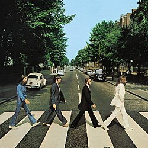

Persoonlijke informatie
- Adres: GentseSteenweg 61
- Telefoonnummer: 0452 28 23 77
- Emailadres: xander.pacquet@student.vives.be
Hobby's
Voetbal
Ik sta verdediger, zelf vind ik Messi de beste voetballer maar er is hier twijfel over.
Meer info vind je hier:
MessiVSronaldo
Tennis
Ik speel maar nog net tennis. Ik moet mijn basiselementen nog leren.
Voor meer info over tennis:
Alle info over tennis
Fitness
Ik ga al een jaartje naar de fitness.
De 6 beste oefeningen:
6 beste oefeningen
Interesses
Favoriete muziek
Mijn favoriete band zijn The Beatles.
The Beatles

Favoriete serie
Mijn favoriete serie is Dexter.
Dexter
Prognose
| Student | Web Development | Programmeren | Databanken |
|---|---|---|---|
| Xander Pacquet | 14/20 | 13/20 | 12/20 |
| Rune Vanbelle | 15/20 | 15/20 | 10/20 |
| Rune Vynckier | 16/20 | 14/20 | 15/20 |
| Bilal | 11/20 | 10/20 | 8/20 |
Vrienden
| Voornaam | Familienaam | Postcode | Woonplaats | Geboortedatum | Hobby |
|---|---|---|---|---|---|
| Rune | Vanbelle | 8650 | Roeselare | Onbekend | Voetbal |
| Rune | Vynckier | 8600 | Waregem | 12/05/2008 | Gaming |
| Bilal | Onbekend | 8900 | Ieper | 03/08/2008 | Fitness |
| Thomas | Depuypere | 8610 | Kortemark | Onbekend | Voetbal |
| Lucas | Geldhof | 8840 | Staden | 21/11/2008 | Tennis |